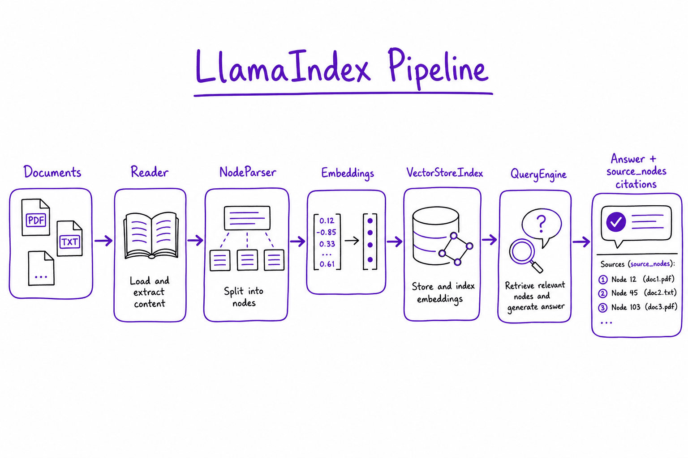
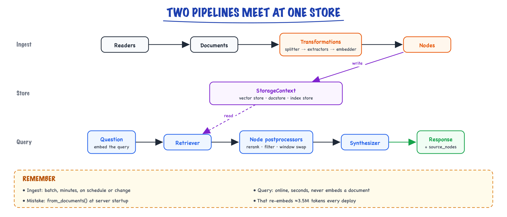
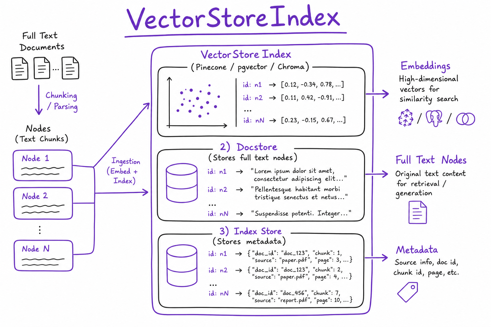
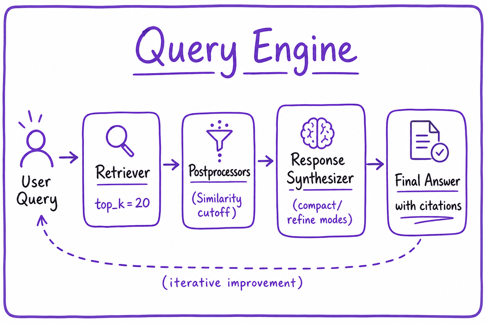

LlamaIndex // Tech & tools
Data-first RAG framework: loaders, indexes, query engines.
01 — At a glance
Data framework for LLM apps: document loaders, node parsers, indices (vector, tree, keyword), query engines, and agents. Strongest when ingestion + retrieval complexity dominates.

LlamaIndex pipeline: load documents → parse to Nodes → build VectorStoreIndex → QueryEngine (retriever + synthesizer) → response with source_nodes citations.
02 — New words
| Word | Meaning |
|---|---|
| Document | One loaded source (a PDF, a wiki page, a row) as text, metadata and an id. Not yet split. |
| Node | The unit that is embedded, stored and retrieved: a chunk of a Document with its own id, metadata and links to its source and neighbours. |
| Metadata mode | Which metadata keys are prepended to a node's text for the embedding model or the LLM, set per key with exclude lists. |
| Transformation | Any step that maps a list of nodes to a list of nodes: splitter, metadata extractor, embedding model. |
| Node parser | A transformation that turns Documents into nodes, such as SentenceSplitter. |
| IngestionPipeline | Runs transformations over Documents, with a cache and docstore so unchanged inputs are skipped next time. |
| Docstore | A key-value store of Documents or nodes; in ingestion it remembers each document's content hash. |
| StorageContext | The bundle of stores an index lives in: vector store, docstore, index store (bookkeeping), optional graph store. |
| VectorStoreIndex | The default index: node embeddings in a vector store (in memory or a database), queried by nearest-neighbour search. |
| Retriever | Takes a query and returns a ranked list of nodes with scores (NodeWithScore). |
| Node postprocessor | A step between retrieval and the LLM that filters, reranks or rewrites nodes. |
| Response synthesizer | Turns a question plus nodes into an answer with one or many LLM calls, depending on its response mode. |
| Query engine | Retriever, postprocessors and synthesizer behind one query() call returning the answer and its source_nodes. |
| Settings | A process-wide object of defaults (LLM, embedding model, splitter) used for anything not passed explicitly. |
The lesson
03 — The question
A retrieval-augmented generation (RAG) app has two halves. At ingest time you load files from many sources, split them, attach metadata, embed them and store them, and redo it whenever files change. At query time you embed a question, fetch and maybe rerank chunks, and have an LLM answer from them with citations. Most of the effort and most of the bugs live in that plumbing, not in the prompt.
LlamaIndex is a Python (and TypeScript) library built around that plumbing. Where LangChain starts from a chain of steps, LlamaIndex starts from your data: documents, nodes, indexes and the engines that query them. Interviewers ask:
- What is the data model (Document, Node, Index) and what actually gets embedded?
- Walk through the write path and the query path. Where does each object live, and what happens when a source file changes?
- What do the response modes (
compact,refine,tree_summarize) do, and what does each cost in LLM calls and latency? - When would you choose LlamaIndex over LangChain, LangGraph, or plain code?
The running example is one concrete app: an internal policy assistant for a company with offices in several countries. The corpus is 800 documents: 300 PDF handbooks averaging 7,200 tokens each and 500 wiki pages averaging 1,500 tokens, 2.91 million tokens in total. About 3% of documents change on a typical day. Each chunk carries roughly 30 tokens of metadata (country, document title, section heading). The question we will follow end to end is:
"I'm in the Berlin office. Can I carry unused vacation days into next year?"
The right answer needs two German chunks (up to 5 days carry over until 31 March; carry-over needs manager approval) and must not be confused by a global page (unused vacation expires 31 December) or the US rule (no carry-over).
04 — Step 1: the mental model, two pipelines meeting at a store
Everything in LlamaIndex belongs to one of two pipelines, and they meet only at the storage layer:

Ingest is a batch job that turns documents into nodes and writes them to the StorageContext; query is a request handler that only reads from it.
The left side is a batch job run on a schedule or on change events. The right side is a request handler that should never embed a document. The classic mistake blurs them: calling VectorStoreIndex.from_documents(docs) in server startup, which re-splits and re-embeds the whole corpus (about 3.5 million tokens for ours) on every deploy.
With this picture every class has a home. Readers and node parsers are ingest; retrievers are query; an index is the thin object that knows which stores hold its nodes and hands you a retriever or query engine over them.
05 — Step 2: Documents, nodes, and what actually gets embedded
A Document is text plus a metadata dict plus an id. A node (concretely a TextNode) is a slice of a Document's text with four more things attached:
- its own
id_, a unique id for that chunk; - a copy of the parent Document's metadata (plus anything added later);
- relationships: a link to the source Document (exposed as
ref_doc_id) and to the previous and next nodes, and, for hierarchical parsers, to parent and child nodes; - two exclude lists,
excluded_embed_metadata_keysandexcluded_llm_metadata_keys.
The exclude lists exist because the embedding model and the LLM see more than the chunk text. To embed a node, LlamaIndex writes one key: value line per non-excluded metadata key, a blank line, then the chunk text, and embeds that whole string; prompts are built the same way with the LLM exclude list. Print node.get_content(metadata_mode=MetadataMode.EMBED) (and MetadataMode.LLM) once on every new corpus to see exactly what each one gets.
Why embed metadata? A chunk saying "up to 5 days may be carried over" does not say which country it is about; prefixing country: DE moves its vector toward questions about Germany or Berlin. But bookkeeping metadata (file paths, sizes, dates) moves the vector too, with noise repeated in every chunk of a file. Exclude it from the embedding and keep it for filtering and citations.
Metadata does two different jobs. A filter (only chunks where country is DE or ALL) is a hard constraint inside the vector store. Embedded metadata only nudges similarity. The assistant needs both: the filter guarantees no US chunk appears; the embedded country ranks German chunks above the global one.
06 — Step 3: splitting, and why the chunk count went up 9%
The default node parser, SentenceSplitter, splits text into sentences and packs whole sentences into chunks up to chunk_size tokens, repeating about chunk_overlap tokens at each boundary so a fact that straddles two chunks appears whole in at least one. We use chunk_size=512 and chunk_overlap=64.
Here is the detail people miss: the splitter is metadata-aware. Since the metadata string is embedded with the chunk, it subtracts the metadata's token length from the budget, so the text part of each chunk is smaller than chunk_size. It measures the longer of the two metadata strings (embed mode and LLM mode), so a key you excluded from the embedding still eats the budget if the LLM sees it. (If the metadata is longer than the chunk size, it raises an error rather than produce empty chunks.) The effect on our corpus, using the approximation \(n = \lceil (L - o) / (s - o) \rceil\) for a document of \(L\) tokens, text budget \(s\) and overlap \(o\):
| Text budget \(s\) | Stride \(s - o\) | Chunks per handbook (7,200) | Chunks per wiki page (1,500) | Total chunks | |
|---|---|---|---|---|---|
| No metadata | 512 | 448 | \(\lceil 7136/448 \rceil = 16\) | \(\lceil 1436/448 \rceil = 4\) | 6,800 |
| 30 tokens of metadata | 482 | 418 | \(\lceil 7136/418 \rceil = 18\) | \(\lceil 1436/418 \rceil = 4\) | 7,400 |
Thirty tokens of metadata produced 8.8% more chunks, vectors and embedding calls (the real splitter cuts at sentences, so actual counts land near these). The full embedding bill is about 3.55 million tokens: 2.91 million of text, 0.42 million of overlap (6,600 boundaries × 64) and 0.22 million of metadata (7,400 × 30). At an illustrative $0.02 per million tokens that is about seven cents: embedding cost is rarely the problem; time, duplicates and staleness are.
Other parsers split Markdown and HTML on headings, cut where adjacent-sentence embeddings diverge (semantic splitting), or build the windows and hierarchies of Step 8. Choosing a chunk size is the subject of Chunking.
07 — Step 4: the ingestion pipeline and incremental updates
An IngestionPipeline applies a list of transformations in order, for example [SentenceSplitter(...), TitleExtractor(), embed_model]. All share one signature, nodes in and nodes out: a splitter turns a Document into nodes, an extractor adds metadata, an embedding model fills each node's embedding. Steps can be reordered or removed independently. Two optional parts make it safe to run nightly.
The transformation cache stores each step's output under a hash of its input nodes plus the transformation's configuration. Same inputs and settings: read from cache. Change chunk_size: the hash changes and the cache correctly misses.
The docstore, attached together with a vector store, records a content hash per Document id. On the next run, for each incoming document:
- Id not seen before: process and insert it.
- Id seen, same hash: skip it entirely. No splitting, no embedding.
- Id seen, different hash: with the upserts strategy, delete that document's old nodes from the vector store (found through
ref_doc_id), then process and insert the new version.
That is the default strategy, upserts. There are two others: duplicates only skips any document whose hash was seen before, ignoring ids (it never deletes, so a changed document is added next to its old version), and upserts and delete also removes documents missing from the input, which you need when policies are retired. All of it rests on stable document ids. Documents built without ids get fresh random ones, so every run sees only "new" documents: nothing is skipped and nothing old is deleted.
For the policy assistant (numbers from the model in the code section): the first run embeds 7,400 nodes. A daily refresh with 24 changed documents (9 handbooks, 15 wiki pages) re-embeds 9 × 18 + 15 × 4 = 222 nodes, 3% of the work, and the store still holds 7,400. The same refresh with random ids doubles the store to 14,800: every chunk is retrieved twice, and retired policy text stays retrievable next to the new text.
Extractors are where ingestion gets expensive. TitleExtractor, SummaryExtractor and QuestionsAnsweredExtractor call an LLM per node or per document. One call per node is 7,400 calls; at an illustrative 2 seconds each with 8 in flight, about 31 minutes per full run. Add them when a measured retrieval gain justifies it. Scheduling, change detection and PII handling belong to Document ingestion.
08 — Step 5: storage, where the vectors and the text live
An index does not hold data; its StorageContext does. There are three stores, and knowing which holds what explains most persistence bugs:
| Store | Holds | Default (in memory) | Production choice |
|---|---|---|---|
| Vector store | Node embeddings, usually the node text and metadata too | SimpleVectorStore: a dict, brute-force search | pgvector, Qdrant, Pinecone, Weaviate, Chroma and others via integration packages |
| Docstore | Documents or nodes by id, plus ingestion hashes | SimpleDocumentStore | Redis, Postgres, MongoDB, Firestore docstores |
| Index store | Small bookkeeping: which node ids belong to which index | SimpleIndexStore | Same backends as the docstore |
With the in-memory defaults, storage_context.persist("./storage") writes each store as JSON and load_index_from_storage reads it back: right for a notebook, wrong for production. Vectors become JSON numbers, roughly 33 KB per 1,536-dimension vector, so our 7,400 nodes are about 250 MB of JSON parsed at every process start (45 MB as raw float32). Brute-force search, 7,400 × 1,536 ≈ 11.4 million multiply-adds per query, takes milliseconds, so speed is not the issue; durability, concurrent writers and several processes sharing one index are.
With an external vector database the index is a thin client. Most integrations store node text and metadata in the row beside the vector, so querying needs no docstore, and VectorStoreIndex.from_vector_store(vector_store) attaches without re-embedding. The ingestion docstore (the hashes) still needs persistent storage, ideally the same database. For our app: one Postgres table of 7,400 rows, an HNSW index on the vector column, and metadata in a JSONB column that the country filter reads (pgvector).
The embedding model is part of the index. Vectors are only comparable with vectors from the same model. When you attach to a stored index you must configure the same embedding model you ingested with. If you forget, LlamaIndex falls back to its default embedding model, an OpenAI model that also produces 1,536-dimensional vectors. If the dimensions differ you get an error; if they match, as they do here, you get no error and confident nonsense. Put the model name in the table or collection name (policy_chunks_e3small_v1) so a mismatch is visible.
09 — Step 6: the query path, retriever to response
index.as_query_engine() builds a RetrieverQueryEngine from three parts, and engine.query(q) runs them in order:
- Retriever.
VectorIndexRetrieverembeds the question with the configured embedding model and asks the vector store for thesimilarity_top_knearest nodes, passing anyMetadataFiltersalong. With a database backend the filter is translated into the database's own filter (a SQLWHEREfor pgvector) and runs inside the search, so filtered-out nodes never come back. Result: a list ofNodeWithScore. One database-level catch: an approximate index such as pgvector's HNSW collects a fixed number of candidates (40 by default) and then applies theWHEREclause, so a selective filter can return fewer thansimilarity_top_krows. Raisehnsw.ef_searchor enable iterative scans (pgvector 0.8 and later) when filters are tight. - Node postprocessors, in list order: drop nodes below a score threshold, rerank with a cross-encoder (Reranking), swap a sentence for its surrounding window, and so on.
- Response synthesizer. Formats the surviving nodes into prompts (using the LLM metadata mode), calls the LLM according to the response mode, and returns a
Responsewith.response(the text) and.source_nodes(exactly what the LLM saw, with scores).
The default similarity_top_k is 2. For our question that is fatal in a quiet way. In the toy model in the code section, with the filter country IN (DE, ALL), the cosine scores are 0.978 for the German carry-over chunk, 0.965 for the global "expires 31 December" page and 0.924 for the German approval-step chunk. Top-2 returns the first two: the answer says "5 days until 31 March" next to a conflicting global rule and never mentions approval. Top-3 includes the approval chunk. Always set similarity_top_k explicitly, usually somewhere between 5 and 20, followed by a reranker if you retrieve wide.
Scores are raw similarities on the embedding model's own scale. A SimilarityPostprocessor(similarity_cutoff=0.7) copied from a tutorial can drop every node for a model whose good matches score 0.4 to 0.6, and the synthesizer then answers from nothing. Derive cutoffs from your own labelled queries, or use a reranker.
source_nodes drives citations, and it is what a retrieval eval checks: is the expected document among them for each golden question? That separates "retrieval missed" from "the LLM ignored good context" (Evals).
10 — Step 7: response modes and what they cost
The synthesizer's response_mode decides how many LLM calls one query makes. The three that matter:
refine: answer from the first node, then for each further node send "here is the existing answer, here is more context, refine it". One call per node, strictly sequential, because each call needs the previous answer.compact(the default): first concatenate all node texts and repack them into as few prompts as fit the model's context window, then refine across those packs. If everything fits, it is one call.tree_summarize: repack the same way, answer each pack independently, then treat the answers as new text and summarise them together, recursively, until one answer remains.
For our question with six 512-token nodes, a 250-token template and a 150-token answer, using illustrative speeds (0.3 s fixed overhead per call, prefill 10,000 tokens/s, decode 80 tokens/s):
| Mode | LLM calls | Input tokens | Output tokens | Latency |
|---|---|---|---|---|
| compact | 1 | 3,342 | 150 | ≈ 2.5 s |
| refine | 6, sequential | 5,442 | 900 | ≈ 13.6 s |
| tree_summarize | 1 | 3,342 | 150 | ≈ 2.5 s |
Refine is slower by the number of nodes because decode dominates each call and calls cannot overlap. It also drifts: each step rewrites the answer, and a weak late chunk can talk the model out of a correct one. Compact with a reranked top-k is the default for question answering.
The modes diverge when the context does not fit, as in "summarise the whole Germany handbook". It is one of the longest handbooks, 18,000 tokens rather than the 7,200 average, so it is 43 nodes and 20,688 tokens once overlap is counted (2,688 tokens are repeated). With an 8,192-token window minus 1,000 reserved for the answer and 300 for the template, each pack holds 6,892 tokens:
| Mode | Calls | Sequential rounds |
|---|---|---|
| refine | 43 | 43 |
| compact | \(\lceil 20688 / 6892 \rceil = 4\) | 4 |
| tree_summarize | 4 pack summaries + 1 combine = 5 | 2 |
Tree summarize makes one more call than compact but can finish in two rounds instead of four, and every pack gets equal weight rather than the last having the final word. The two rounds need concurrency switched on: pass use_async=True (or call aquery). With the synchronous default the four pack calls run one after another, so it takes five sequential calls, still with the equal weighting. It is the usual mode over a SummaryIndex, an index that returns all its nodes, for whole-document questions.
11 — Step 8: retrieval shapes beyond plain top-k
Most of LlamaIndex's surface area is retrieval patterns built from the same parts. Three are worth knowing by mechanism.
Sentence window. Small chunks embed precisely; large chunks give the LLM context. The sentence-window parser makes each node one sentence and keeps the surrounding sentences (three either side by default) in a window metadata key excluded from the embedding. A MetadataReplacementPostProcessor swaps each hit for its window: a 25-token sentence is matched, about 175 tokens reach the LLM.
Auto-merging. A hierarchical parser splits at several sizes (say 2,048, 512, 128), linked as parents and children; only leaves are embedded. If more than a ratio (0.5 by default) of one parent's children are retrieved, they are replaced by the parent: three of four 128-token leaves gives \(0.75 > 0.5\), so 384 tokens of fragments become one 512-token passage. Parents live in the docstore.
Routing and decomposition. A RouterQueryEngine has an LLM pick one engine by description (vector engine for specifics, summary engine for "summarise X"), adding one call before retrieval. A SubQuestionQueryEngine turns "compare carry-over in Germany and the US" into two sub-questions: 1 + 2 + 1 = 4 LLM calls. Measure both against one well-filtered retrieval before adopting them. Hybrid retrieval (Hybrid search) and graph indexes (GraphRAG) plug into the same retriever slot.
12 — Step 9: workflows and agents, the orchestration layer
Query engines are fixed pipelines. For loops, branches and tool use, LlamaIndex has Workflows: methods marked as steps, each declaring by type annotation the event it consumes and the event it emits. A run starts with a StartEvent and ends when a step returns a StopEvent; it is an async, event-driven state machine, and the library's agents (FunctionAgent, ReActAgent, AgentWorkflow) are built on it. Any query engine becomes an agent tool with QueryEngineTool. LangGraph makes the same explicit-state trade-off with more emphasis on checkpoints and human approval, and a common split is LlamaIndex retrieval exposed as a tool inside whatever runs the agent loop; see Choosing an agent framework.
13 — A worked example: one request, every hop
The production configuration for the policy assistant: pgvector store, filter country IN (DE, ALL) derived from the user's profile (not from the question text), retrieve 20, rerank to 6, compact synthesis. Latencies are illustrative.
| Hop | What happens | Size | Time |
|---|---|---|---|
| Embed question | One embedding call, same model as ingest | ~20 tokens | ~80 ms |
| Vector search | HNSW over 7,400 rows with the country filter in SQL | top 20 nodes | ~15 ms |
| Rerank | Cross-encoder scores 20 (question, node) pairs, keeps 6 | 6 nodes | ~120 ms |
| Synthesize | compact: one prompt of 3,342 tokens, 150-token answer | 1 LLM call | ~2.5 s |
| Return | Answer plus source_nodes for citations and logging | 6 citations | ~0 |
About 2.7 seconds end to end, over 90% of it in the LLM call; framework overhead is milliseconds. The answer cites the German carry-over and approval chunks, and the prompt states that country policy overrides global policy, since the global page may also be retrieved.
Each hop fails visibly somewhere else: the wrong embedding model gives irrelevant chunks, a missing filter lets the US rule in, top-k of 2 drops the approval step, a high cutoff empties the context, refine multiplies latency by six. Logging node ids and scores per request is how you tell them apart (Observability).
14 — Choosing LlamaIndex
| Situation | Choice | Why |
|---|---|---|
| Many sources and formats, incremental re-indexing, citations | LlamaIndex for ingestion and retrieval | Readers, parsers, the pipeline's hash-based upserts and source_nodes are exactly this job. |
| Advanced retrieval experiments (windows, auto-merging, routing, sub-questions) | LlamaIndex | Each is a few lines over the same node model, so you can measure them quickly. |
| One source, one vector table, one prompt | Plain code, or the database client directly | Fifty lines you fully understand beat a dependency tree; see The RAG pipeline. |
| App is mostly glue across many model providers and tools | LangChain | Its common interface is aimed at composing calls, not at managing documents. |
| Long-running, stateful agent with approvals and resumption | LangGraph, with LlamaIndex retrieval as a tool | Checkpointed state and interrupts are its core; retrieval is one node. |
Costs to weigh: a core package plus many separately versioned integration packages, and APIs that have moved (ServiceContext replaced by Settings, agents rebuilt on workflows), so pin versions and wrap what you use behind your own small interface. Defaults suit a demo, not production. The value is real when ingestion complexity dominates; otherwise you carry abstraction you do not use.
15 — In code: the real API, and a model of it
The policy assistant's ingestion job and the query engine of the worked example (filter, retrieve 20, rerank to 6, compact), written against the documented 2025 API:
# Not run here: needs llama-index-core, the OpenAI and Postgres integration packages, sentence-transformers, API keys and a database. # Written against LlamaIndex's documented Python API (2025). import os from llama_index.core import SimpleDirectoryReader, VectorStoreIndex from llama_index.core.ingestion import IngestionPipeline, DocstoreStrategy from llama_index.core.node_parser import SentenceSplitter from llama_index.core.postprocessor import SentenceTransformerRerank from llama_index.core.storage.docstore import SimpleDocumentStore from llama_index.core.vector_stores import MetadataFilters, MetadataFilter, FilterOperator from llama_index.embeddings.openai import OpenAIEmbedding from llama_index.llms.openai import OpenAI from llama_index.vector_stores.postgres import PGVectorStore embed = OpenAIEmbedding(model="text-embedding-3-small") # the SAME model at ingest and at query time llm = OpenAI(model="gpt-4o-mini", temperature=0.1) def file_meta(path): # reader hook: file path -> metadata dict return {"country": "DE" if "/de/" in path else "ALL", "file_name": os.path.basename(path)} docs = SimpleDirectoryReader("./policies", recursive=True, filename_as_id=True, # stable doc ids file_metadata=file_meta).load_data() for d in docs: # file names are bookkeeping: cite them, do not embed them d.excluded_embed_metadata_keys = ["file_name"] vector_store = PGVectorStore.from_params( host="localhost", port="5432", database="kb", user="app", password=os.environ["PGPASSWORD"], table_name="policy_chunks_e3small_v1", embed_dim=1536, # model name in the table name hnsw_kwargs={"hnsw_m": 16, "hnsw_ef_construction": 64, "hnsw_ef_search": 40, "hnsw_dist_method": "vector_cosine_ops"}) pipeline = IngestionPipeline( transformations=[SentenceSplitter(chunk_size=512, chunk_overlap=64), embed], docstore=SimpleDocumentStore(), # doc_id -> hash; Redis/Postgres docstore in prod vector_store=vector_store, docstore_strategy=DocstoreStrategy.UPSERTS) if os.path.exists("./pipeline_state"): pipeline.load("./pipeline_state") pipeline.run(documents=docs) # embeds only new or changed documents pipeline.persist("./pipeline_state") index = VectorStoreIndex.from_vector_store(vector_store, embed_model=embed) # no re-embedding rerank = SentenceTransformerRerank(model="cross-encoder/ms-marco-MiniLM-L-6-v2", top_n=6) engine = index.as_query_engine( llm=llm, similarity_top_k=20, response_mode="compact", # never rely on the default top_k of 2 node_postprocessors=[rerank], # retrieve 20, keep the best 6 filters=MetadataFilters(filters=[ # countries come from the user's profile MetadataFilter(key="country", value=["DE", "ALL"], operator=FilterOperator.IN)])) resp = engine.query("I'm in the Berlin office. Can I carry unused vacation days into next year?") print(resp.response) for n in resp.source_nodes: # citations and retrieval evals start here print(round(n.score, 3), n.node.metadata["file_name"], n.node.ref_doc_id)
The mechanisms in plain Python, runnable anywhere: metadata-aware splitting, the docstore's hash-based upserts (and what random ids do), filter-then-rank retrieval, and LLM call counts per response mode.
import hashlib, math, uuid import numpy as np # --- 1. metadata-aware splitting (tokens modelled as list items) --- def split(n_tokens, meta_len, size=512, overlap=64): eff = size - meta_len # metadata is embedded too, so it eats the budget if eff <= overlap: raise ValueError("metadata leaves no room for text") stride = eff - overlap return [(s, min(s + eff, n_tokens)) for s in range(0, max(1, n_tokens - overlap), stride)] corpus = {f"handbook-{i:03d}.pdf": 7200 for i in range(300)} corpus.update({f"wiki-{i:03d}": 1500 for i in range(500)}) for meta in (0, 30): print("metadata", meta, "-> chunks", sum(len(split(n, meta)) for n in corpus.values())) # --- 2. ingestion with a docstore: stable ids + content hash = incremental updates --- class Pipeline: def __init__(self): self.docstore, self.vectors, self.embed_calls = {}, {}, 0 # doc_id -> hash ; node_id -> ref_doc_id def run(self, docs): # docs: {doc_id: (text_version, n_tokens)} for doc_id, (version, n) in docs.items(): h = hashlib.sha256(f"{doc_id}:{version}".encode()).hexdigest() if self.docstore.get(doc_id) == h: continue # unchanged: skip, no embedding self.vectors = {k: v for k, v in self.vectors.items() if v != doc_id} # upsert: drop old nodes for j, _ in enumerate(split(n, 30)): self.vectors[f"{doc_id}#{j}"] = doc_id self.embed_calls += 1 self.docstore[doc_id] = h docs = {d: (1, n) for d, n in corpus.items()} p = Pipeline(); p.run(docs); first = p.embed_calls changed = [f"handbook-{i:03d}.pdf" for i in range(9)] + [f"wiki-{i:03d}" for i in range(15)] for d in changed: docs[d] = (2, docs[d][1]) p.run(docs) print("first run embeds", first, "| refresh embeds", p.embed_calls - first, "| nodes stored", len(p.vectors)) q = Pipeline(); q.run(docs) q.run({str(uuid.uuid4()): v for v in docs.values()}) # random ids every run print("random ids, second run -> nodes stored", len(q.vectors)) # --- 3. retrieve: filter first, then top-k by cosine --- nodes = [ # (text, country, vector) ("DE: up to 5 unused days carry over to 31 March", "DE", [0.9, 0.3, 0.1]), ("Global: unused vacation expires 31 December", "ALL", [0.8, 0.5, 0.1]), ("US: PTO does not carry over", "US", [0.85, 0.4, 0.1]), ("DE: carry-over needs manager approval in HR tool", "DE", [0.7, 0.2, 0.6]), ] query = np.array([0.88, 0.35, 0.3]) def retrieve(k, countries): rows = [(t, np.dot(v, query) / (np.linalg.norm(v) * np.linalg.norm(query))) for t, c, v in nodes if c in countries] return [(t[:24], round(float(s), 3)) for t, s in sorted(rows, key=lambda r: -r[1])[:k]] print("top-2:", retrieve(2, {"DE", "ALL"})) print("top-3:", retrieve(3, {"DE", "ALL"})) # --- 4. how many LLM calls each response mode makes --- def llm_calls(chunk_tokens, mode, usable=6892, summary_tokens=300): if mode == "refine": return len(chunk_tokens), len(chunk_tokens) # (calls, sequential rounds) packs = math.ceil(sum(chunk_tokens) / usable) # compact repacks text to fill the window if mode == "compact": return packs, packs # refine across packs calls, rounds, level = 0, 0, packs # tree_summarize while True: calls += level; rounds += 1 if level == 1: return calls, rounds level = math.ceil(level * summary_tokens / usable) top6 = [512] * 6 handbook = [e - s for s, e in split(18000, 30)] print("handbook nodes", len(handbook), "tokens", sum(handbook)) for mode in ("compact", "refine", "tree_summarize"): print(f"{mode:15s} top-6 {llm_calls(top6, mode)} whole handbook {llm_calls(handbook, mode)}")
It prints 6,800 and 7,400 chunks (Step 3); 7,400 nodes on the first run, 222 re-embedded on refresh with the store still at 7,400, and 14,800 when ids are random (Step 4); top-2 missing the approval chunk that top-3 finds (Step 6); and for the response modes, 1 call for compact and tree summarize versus 6 for refine on the top-6 query, then 4, 43 and 5 calls for the whole 43-node handbook, in 4, 43 and 2 sequential rounds, the last assuming tree summarize runs its pack calls concurrently (Step 7).
Quick reference
16 — What & Why
Problem: RAG apps spend most engineering time on getting data in (loaders, chunking, metadata) and querying it out (retrieval, synthesis, citations) — not on prompt wording alone.
Functional
- 100+ document loaders (PDF, Notion, SQL, APIs)
- Parse documents into Nodes (chunks + metadata)
- Build Indices backed by Vector search & databases
- QueryEngine retrieve + synthesize with
source_nodesfor citations
Non-Functional
- Persist indices to disk or managed vector DB
- IngestionPipeline for parallel extract/embed at scale
- Eval recall via source_nodes on golden queries
For agent orchestration with HITL prefer LangGraph wrapping a LlamaIndex retriever as a tool. Embeddings via Calling a model or Choosing an embedding model.
17 — Core Concepts
| Term | Definition | Gotcha |
|---|---|---|
| Document | Loaded file or record with text + metadata | Not yet chunked for embedding |
| Node | Chunk + metadata — smallest indexed unit | What gets embedded and retrieved |
| Index | Data structure over nodes (VectorStoreIndex common) | Wrong chunk size hurts recall more than prompt tuning |
| QueryEngine | query → retriever → response synthesizer | Returns response.source_nodes for citations |
| StorageContext | docstore + vector store + index store | Persist together for consistent reload |
18 — API / Interface Surface
from llama_index.core import VectorStoreIndex, SimpleDirectoryReader, Settings
from llama_index.embeddings.openai import OpenAIEmbedding
from llama_index.llms.openai import OpenAI
Settings.embed_model = OpenAIEmbedding(model="text-embedding-3-small")
Settings.llm = OpenAI(model="gpt-4o-mini")
docs = SimpleDirectoryReader("./data").load_data()
index = VectorStoreIndex.from_documents(docs)
engine = index.as_query_engine(similarity_top_k=10)
response = engine.query("What is our refund policy?")
print(response)
for node in response.source_nodes:
print(node.score, node.metadata) | API | Purpose |
|---|---|
from_documents | Ingest + embed + index in one call |
as_query_engine | Retriever + synthesizer bundle |
as_retriever | Use in LangChain/LangGraph chains |
storage_context.persist | Save local index to disk |
Settings singleton
Settings.embed_model and Settings.llm apply globally unless overridden per index/query. Set once at app startup; inject test doubles in unit tests.
from llama_index.core import Settings Settings.chunk_size = 512 Settings.chunk_overlap = 50 Settings.embed_model = OpenAIEmbedding(model="text-embedding-3-small") Settings.llm = OpenAI(model="gpt-4o-mini", temperature=0.1)
19 — When to Use / When NOT
20 — Architecture
Sources (PDF, Notion, SQL)
|
v
+----------+
| Reader |
+-----+----+
v
+----------+
|NodeParser| chunk_size / overlap
+-----+----+
v
+----------+
| Embedder |
+-----+----+
v
+--------------+
| VectorStore | Pinecone / pgvector / Chroma
+------+-------+
v
+--------------+
| QueryEngine | top_k -> synthesizer -> answer
+--------------+Eval loop (recommended):
golden_questions.jsonl
-> engine.query(q)
-> check expected doc_id in source_nodes[:5]
-> track recall@5 weekly
-> block deploy if recall drops > 5% 21 — Deep Dive: Indices

VectorStoreIndex backed by Pinecone/pgvector/Chroma with docstore for full text.
Index types
- VectorStoreIndex — production default; ANN over embeddings
- SummaryIndex — sequential summarization over all nodes
- TreeIndex — hierarchical query over tree of summaries
- KnowledgeGraphIndex — entity/relation extraction
from llama_index.vector_stores.pinecone import PineconeVectorStore vector_store = PineconeVectorStore(pinecone_index=pinecone_index) index = VectorStoreIndex.from_vector_store(vector_store)
Attach existing managed index instead of rebuilding on every deploy.
| Index type | Best for | Production? |
|---|---|---|
| VectorStoreIndex | Semantic search over chunks | Yes — default |
| SummaryIndex | Summarize-all-then-query | Small corpora only |
| TreeIndex | Hierarchical QA | Niche |
| KnowledgeGraphIndex | Entity/relation queries | Experimental |
Production: attach Pinecone index
import os
from pinecone import Pinecone
from llama_index.core import VectorStoreIndex, StorageContext
from llama_index.vector_stores.pinecone import PineconeVectorStore
pc = Pinecone(api_key=os.environ["PINECONE_API_KEY"])
pinecone_index = pc.Index("rag-prod-v1")
vector_store = PineconeVectorStore(pinecone_index=pinecone_index)
storage_context = StorageContext.from_defaults(vector_store=vector_store)
index = VectorStoreIndex.from_vector_store(
vector_store, storage_context=storage_context)
# Query with tenant filter via MetadataFilters
from llama_index.core.vector_stores import MetadataFilters, ExactMatchFilter
filters = MetadataFilters(filters=[ExactMatchFilter(key="tenant_id", value="acme")])
engine = index.as_query_engine(similarity_top_k=15, filters=filters)See Pinecone and Vector search & databases for namespace and metadata filter design.
22 — Deep Dive: Query Engine

Query engine: retriever top_k=20, postprocessor, compact/refine synthesizer modes.
from llama_index.core.postprocessor import SimilarityPostprocessor
engine = index.as_query_engine(
similarity_top_k=20,
node_postprocessors=[SimilarityPostprocessor(similarity_cutoff=0.7)],
response_mode="compact", # or refine, tree_summarize
)
response = engine.query("Refund policy for EU customers?")Response modes
- compact — single prompt with all chunks (fast)
- refine — iterative refinement per chunk (slow, thorough)
- tree_summarize — hierarchical merge for long contexts
Add Reranking after retrieval for better precision.
from llama_index.core.retrievers import QueryFusionRetriever
from llama_index.retrievers.bm25 import BM25Retriever
vector_retriever = index.as_retriever(similarity_top_k=20)
bm25_retriever = BM25Retriever.from_defaults(docstore=index.docstore, similarity_top_k=20)
fusion_retriever = QueryFusionRetriever(
retrievers=[vector_retriever, bm25_retriever],
similarity_top_k=20,
num_queries=1,
mode="reciprocal_rerank",
)
engine = RetrieverQueryEngine.from_args(
retriever=fusion_retriever,
node_postprocessors=[SimilarityPostprocessor(similarity_cutoff=0.7)],
)
23 — Deep Dive: Ingestion
from llama_index.core.ingestion import IngestionPipeline
from llama_index.core.node_parser import SentenceSplitter
pipeline = IngestionPipeline(
transformations=[
SentenceSplitter(chunk_size=512, chunk_overlap=50),
Settings.embed_model,
],
vector_store=vector_store,
)
nodes = pipeline.run(documents=docs, show_progress=True)LlamaHub: 100+ loaders (Notion, Slack, Google Drive). Coordinate with Document ingestion system design for scheduling, dedup, and PII handling.
24 — Deep Dive: Agents
query_engine_tool = QueryEngineTool.from_defaults(
query_engine=engine,
name="company_kb",
description="Search internal policy documents",
)
# OpenAIAgent or ReActAgent with query_engine_toolsLlamaIndex agents combine tools + query engines. For production control (HITL, checkpointing) wrap retriever in LangGraph tool node instead.
from llama_index.core.agent import ReActAgent
from llama_index.core.tools import QueryEngineTool
qe_tool = QueryEngineTool.from_defaults(
query_engine=engine,
name="policy_kb",
description="Internal HR and refund policies",
)
agent = ReActAgent.from_tools([qe_tool], llm=Settings.llm, verbose=True)
response = agent.chat("Can EU customers get refunds after 30 days?")ChatEngine for multi-turn
chat_engine = index.as_chat_engine(chat_mode="condense_question")
response = chat_engine.chat("What about enterprise plans?")
# condense_question rewrites follow-up using history before retrieveFor durable session state in production, prefer explicit history store + query engine per turn (Memory & context engineering).
25 — LlamaIndex vs LangChain
| Dimension | LlamaIndex | LangChain |
|---|---|---|
| Focus | Indexing, query, citations | General chains, tools, agents |
| Ingestion | First-class loaders + pipelines | Document loaders + text splitters |
| Query API | QueryEngine with source_nodes | Retriever + LCEL chain |
| Agents | Built-in ReAct agents | LangGraph recommended for prod |
| Combine | LI retriever in LC/LG chain | Best of both common |
In production
26 — Production & Ops
| Concern | Practice |
|---|---|
| Storage | Persist to Pinecone / pgvector, not local disk |
| Versioning | Embed model version in index/namespace name |
| Eval | Golden queries on source_nodes recall@k |
| Scale | IngestionPipeline async; batch embed |
| Multi-tenant | Metadata filters on tenant_id at query time |
28 — Where people get lost
- Default chunk size wrong for your docs — eval before prod
- Not persisting index — rebuild every deploy wastes time and money
- Ignoring source_nodes in eval — answer quality can hide bad retrieval
- Mixing embedding models in same index — never do this
- refine mode at scale — too many LLM calls; prefer compact + rerank
- Skipping metadata filters — cross-tenant leakage in multi-tenant SaaS
Re-index playbook
- Create new namespace/collection with embed version suffix (e.g.
_e3small_v2) - Run IngestionPipeline on full corpus into new namespace
- Eval recall@5 on golden set against new index
- Blue/green switch query engine config in app
- Delete old namespace after 7-day rollback window
Coordinate with Document ingestion jobs for scheduled refresh.
- "LlamaIndex is a vector database." It is a library that talks to one. Its built-in
SimpleVectorStoreis an in-memory dict saved as JSON; production data belongs in a real store that LlamaIndex attaches to. - "Call
from_documentsat startup." That re-embeds the corpus every deploy. Ingest in a separate job with anIngestionPipeline, and have the server attach withfrom_vector_store. - "Re-running ingestion is safe." Only with stable document ids and a persisted docstore. Random ids add a full copy of the corpus on every run and leave retired text retrievable.
- "The defaults are sensible." Default top-k is 2, default stores are in memory, and unset models fall back to library defaults. Set top-k, stores, LLM and embedding model explicitly.
- "Metadata is only for filtering." Non-excluded metadata is embedded and sent to the LLM, and it shrinks each chunk's text budget. Check
get_contentin both metadata modes and exclude bookkeeping keys. - "Refine is more thorough, so it is better." It makes one sequential call per node, so latency scales with top-k, and late weak chunks can corrupt a good answer. Use compact for Q&A and tree summarize for summaries.
- "
Settingsis harmless config." It is global mutable state. Two tenants with different models, or a test that sets a mock LLM, will leak into each other. Passllmandembed_modelexplicitly in shared code. - "A similarity cutoff of 0.7 is standard." Score scales differ by embedding model. A borrowed cutoff can drop every node; derive thresholds from your own labelled queries.
29 — How this connects
Builds on
- Calling a model — The API call end to end: messages, roles, streaming, tool calls, errors and retries, across providers.
- Embeddings — Turning meaning into numbers: dense vectors, cosine similarity, sentence embeddings and contrastive training.
- Choosing an embedding model — Model families, dimensions, benchmarks, cost, and when to fine-tune or switch.
- Vector search & databases — Exact and approximate nearest neighbours, HNSW and IVF, and choosing a vector database.
- Document ingestion — Parsing PDFs and HTML, OCR, deduplication and keeping the index fresh.
- The RAG pipeline — Retrieve, augment, generate: every stage from a question to a grounded, cited answer.
Where this shows up later
30 — Check yourself
With chunk_size=512, chunk_overlap=64 and 60 tokens of embedded metadata, roughly how many chunks does a 10,000-token document produce, and how many without metadata?
After a week of nightly ingestion, answers cite the same paragraph several times, sometimes next to an outdated version. Why, and what do you change?
A query retrieves 10 nodes of 400 tokens; template 270 tokens, answer 150. With 0.3 s overhead per call, 10,000 tokens/s prefill and 80 tokens/s decode, estimate compact versus refine latency.
Users get "I could not find that in the policies" for covered questions, with empty source_nodes, though retrieval works in a notebook. Where do you look first?
You switch to a newer embedding model with the same dimension and redeploy only the query service. What happens, and how should it be done?
A team building a single-source FAQ bot (one Postgres table, one prompt) asks whether to adopt LlamaIndex. What do you advise?
Why does tree_summarize finish a 4-pack summary in fewer sequential rounds than compact, despite more calls?
use_async=True (or aquery) they run in parallel, then combines them in one call: 5 calls in 2 rounds, and every pack gets equal weight. With the synchronous default the pack calls run one by one, so the round advantage disappears.Node vs Document?
VectorStoreIndex vs loading vector DB directly?
from_vector_store() to attach existing Pinecone/pgvector without re-embedding.How get citations?
response.source_nodes lists retrieved nodes with scores and metadata. Pass file/page refs to UI; log for eval harness.Query engine vs chat engine?
LlamaIndex vs LangChain for RAG?
Persist index?
storage_context.persist() to local disk for dev; write to managed vector DB for prod. Namespace/index name includes embed model version.Custom node parser?
SentenceSplitter with chunk_size/overlap; SemanticSplitter for embedding-based splits. Match Chunking eval results.Hybrid search in LlamaIndex?
QueryFusionRetriever combines multiple retrievers; add BM25 via Elasticsearch retriever + vector retriever + reciprocal rank fusion.